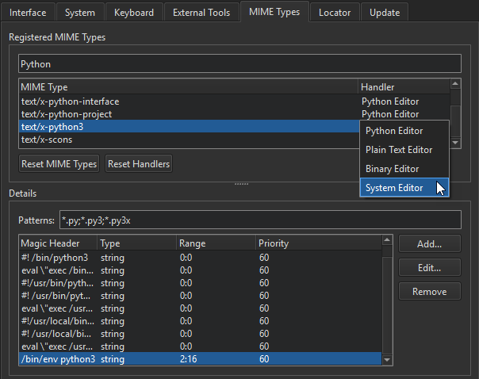
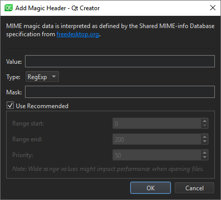

Editing MIME Types
Qt Creator uses the MIME type of the file to determine which mode and editor to use for opening the file. For example, Qt Creator opens C++ source and header files in the C++ editor, and Qt widget based UI files (.ui) in Qt Designer. For some MIME types, you can change the editor that is used to open the files of that type by default.
To identify the MIME type of a file, Qt Creator uses matching by pattern and matching by contents. First, Qt Creator looks at the filename to check whether it matches the patterns specified for any MIME type. If no match is found, it checks the contents of the file for magic headers specified for the file.
The magic headers can contain the following types of values: string, host, big-endian, little-endian, and byte. Qt Creator interprets the values according to the Shared MIME-info Database specification.
Qt Creator searches for the value within a specified range in the files and takes the priority of the magic header into account. If you specify wide search ranges, openging files in Qt Creator might take a long time. Therefore, you are advised to use the recommended values for the range and priority of the magic header.
If your files do not match the predefined MIME types, you can edit the MIME types to add filename extensions and magic headers. You cannot add new MIME types, however.
To edit MIME types:
- Select Tools > Options > Environment > MIME Types.

- In MIME Type, select a MIME type.
- In Patterns, add the filename extension for the type of files that you want to identify as having this MIME type.
- Click Add to add Magic Headers.

- In the Value field, specify a text string or bytes that appear in the files.
- In the Type field, select the type of the value.
- In the Mask field, specify the number to combine the value in the file with using the AND operator before comparing it to the specified value. You can specify any numbers as masks for numerical types, whereas masks for strings must be in base 16, and start with 0x.
Note: You are recommended not to change the range and priority, because it might cause problems when opening files in Qt Creator.
- In Handler, double-click the editor name to display a context-menu where you can select another editor to open the file in by default. The menu is available only if alternative suitable editors are available.
- Click OK.
Even if an alternative editor is not listed for a MIME type, you can still change the editor that is used to open the files of a particular type. Remove the filename extension from the current MIME type and add it to a MIME type that is handled by the editor you want to use. For example, to edit Linux kernel device tree source (.dts) files with the text editor, delete the pattern *.dts from the MIME type audio/vnd.dts (where it represents the digital surround audio file format), and add it to the text/plain MIME type. You can use the Filter field to find the MIME type that currently contains a filename extension.
To revert the changes you have made to the MIME type definitions, select Reset MIME Types. To revert the changes you have made to the default editors, select Reset Handlers.
Note: If you now select OK or Apply, you permanently lose all your own patterns and magic headers. The changes are reverted the next time you start Qt Creator.